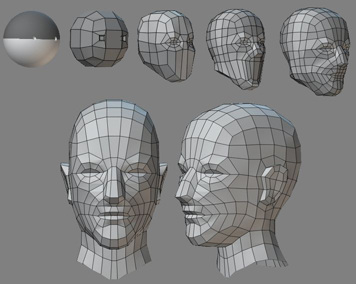
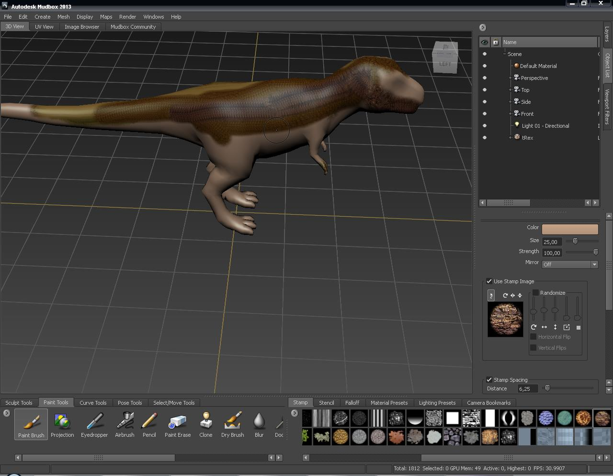
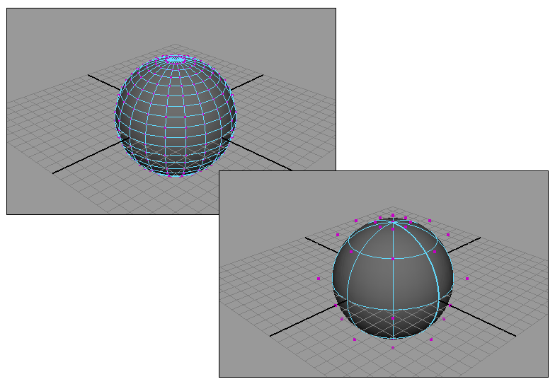
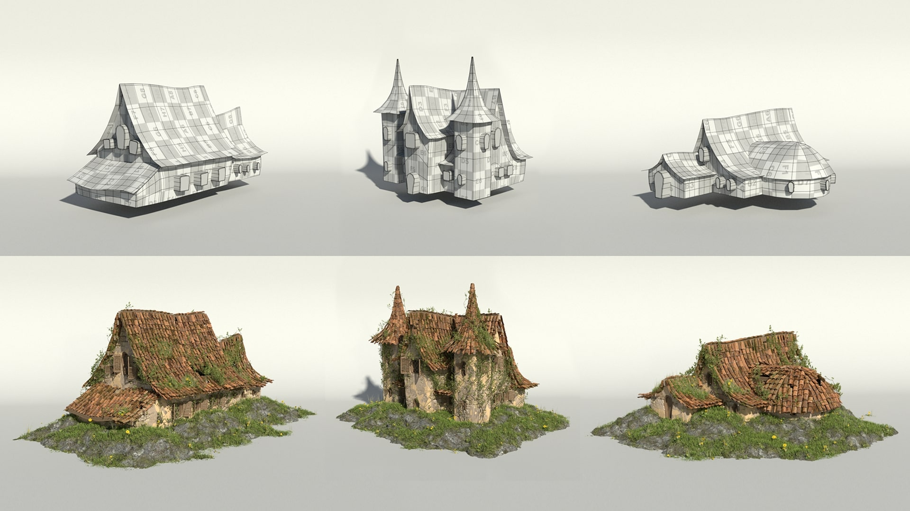

Инструменты и уроки
Здесь ты найдёшь различные полезные техники, которые ты можешь использовать в производстве своих моделей. Кроме этого, в этом разделе также будут публиковаться уроки (tutorials) по различным областям 3D
Для начала рассмотрим основные техники моделирования:

Полигональное моделирование
Самая первая разновидность трёхмерного моделирования, которая появилась в те времена, когда для определения точек в трёхмерном пространстве приходилось вводить вручную с клавиатуры координаты X, Y и Z.
Как известно, если три или более точек координат заданы в качестве вершин и соединены рёбрами, то они формируют многоугольник (полигон), который может иметь цвет и текстуру. Соединение группы таких полигонов позволяет смоделировать практически любой объект. Недостаток полигонального моделирования состоит в том, что все объекты должны состоять из крошечных плоских поверхностей, а полигоны должны иметь очень малый размер, иначе края объекта будут иметь огранённый вид. Это означает, что если для объекта на сцене предполагается увеличение, его необходимо моделировать с большим количеством полигонов (плотностью) даже, несмотря на то, что большинство из них будут лишними при удалении от объекта..
На основе этих простых объектов можно компоновать более сложные. Либо использовать простые как основу для более сложных. Методом разделения, последовательного выдавливания и череды простых трансформаций фрагментов куба можно получить человеческую руку или шланг от пылесоса. Кому как нравится или как того требует задача.
Если моделируемый объект симметричный, то эффективнее будет разрезать объект по оси симметрии и применив модификатор симметрии или зеркалирования выполнять операции только с одной частью модели, допустим левой. Изменения возникшие на одной стороне модели (левой) будут автоматически добавляться модификатором на другую (правую) зеркальную сторону.
Все действия производимые с объектом записываются в историю действий. По истории можно перемещаться вперёд и назад. Модификаторы используются для простого типового изменения формы объекта. В зависимости от пакета моделирования их название и состав могут отличаться.
Полигональное моделирование одинаково хорошо реализовано во всех современных конкурентноспособных пакетах моделирования: Blender, 3Dsmax, Maya, Cinema 4D, LightWave, Modo.

Скульптинг
Следуюшая технология — скульптинг основана на принципах скульптурной лепки, позаимствованных из реальной жизни. 3d-художник лепит форму объекта, не задумываясь о топологии сетки. По взмаху виртуальной кисти на модели появляются вмятины, вздутия или текстурный рельеф.
Скульптинг идеально подходит для создания органических фигур – персонажей, монстров, одежды.
Он позволяет легко создавать фантастически детализированные объекты, даже если ваш компьютер не справляется с такими сложными сетками в программах для моделирования! В отличие от них, программы для скульптинга оптимизированы для работы с огромным количеством полигонов.
Скульптинг часто применяется для создания концептов или моделей для 3d печати. Также если цель получить просто изображение без анимации, то выскополигональная модель тоже подойдет даже без оптимизации или ретопологии.
Естественно после такого творческого процесса топология получается очень мусорная и нужно производить в обязательном порядке ретопологию. Ретопология это уменьшение количества полигонов (полигонажа) за счёт создания в ручную новой более оптимизированной сетки. Ретопология это буквально обрисовывание высокополигональной модели.
Чтобы работать в такой технике требуется мпециализированный софт: ZBrush, 3D-Coat, Mudbox.

Сплайновое NURBS-моделирование
NURBS моделирование или технология Non-Uniform Rational B-Spline – это технология неоднородных рациональных В-сплайнов, создание плавных форм и моделей, у которых нет острых краев, как у полигональных моделей. Именно из-за этой отличительной черты технологию NURBS применяют для построения органических моделей и объектов (растений, животных, людей).
Чтобы изменить характеристики поверхности нужно изменить кривизну линии. NURBS-поверхности имеют бесконечную детализацию, так как форму таких поверхностей описываются математическими формулами, а не расположением вершин как в полигональном моделировании. Перед тем как визуализировать такую поверхность программа предварительно её триангулирует. Триангуляция это процесс разбиения на треугольные грани.
NURBS-кривые, используемые в данном моделировании, бывают двух видов: Р (Point) кривые и CV (Control Vertex) кривые. Point кривые управляются вершинами, находящимися непосредственно на самой линии или объекте, а Control Vertex кривые управляются точками, лежащими за пределами линии или объекта.
У данного метода моделирования есть преимущества перед полигональным. А именно - точность. Данную методику применяют для изготовления точных промышленных изделий, который потом будут изготавливаться литьём штамповкой и т. д.
Данная технология реализована в 3dsmax и Maya и доведена до совершенства в CAD-пакетах: Rinoceroc, Katia, Fusion 360.

Процедурное моделирование
Процедурное моделирование востребовано в таких задачах, где требуется создание систем объектов и поверхностей, которыми нужно еще и гибко управлять. К таким системам можно отнести деревья (растения), небоскрёб или целый город (архитектурные объекты), толпу людей, взаимодействующих по определённому сценарию.
Процедурное моделирование может быть линейным (стековым) и нелинейным (узловым или нодовым). Линейную процедурность поддерживают все серьёзные пакеты моделирования, она основана на вертикальном стеке модификаторов. Нодовое процедурное моделирование хорошо реализовано в Houdini, Cinema 4D с модулем MoGraph, Rhinoceros с плагином Grasshopper.
Процедурное моделирование имеет большое преимущества над всеми остальными за счёт отсутствия деструктивных операций. В любой момент 3d-художник может вернуться на любой этап моделирования и изменить нужный параметр. Естественно рабочая сцена хранит всю информацию о произведённых действиях пользователя. В определённый момент, если не контролировать процесс моделирования и своевременно не чистить историю, рабочий файл может разростись до гиганских размеров. Компьютер перестанет справляться с возросшим объёмом информации. В параметрическом моделировании легко уживаются сплайны и полигональные объекты.
У данного метода моделирования есть преимущества перед полигональным. А именно - точность. Данную методику применяют для изготовления точных промышленных изделий, который потом будут изготавливаться литьём штамповкой и т. д.
Данная технология реализована в 3dsmax, Blender, Houdini.